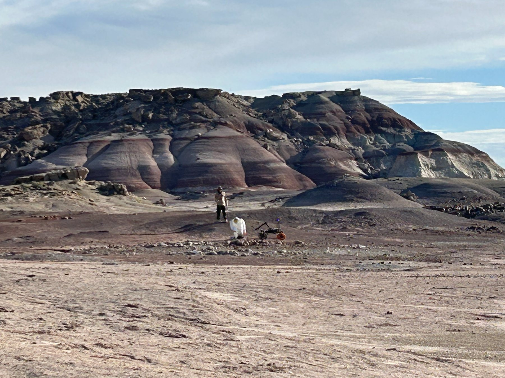
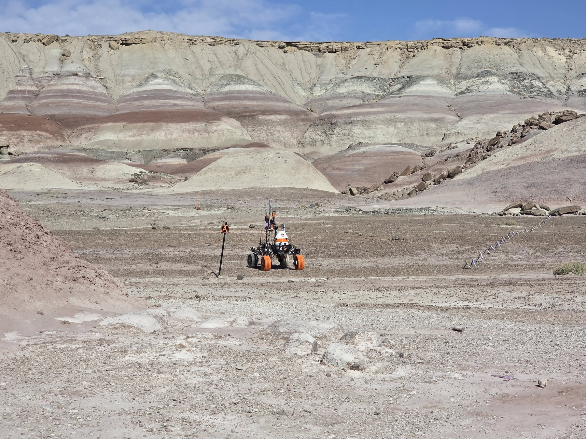
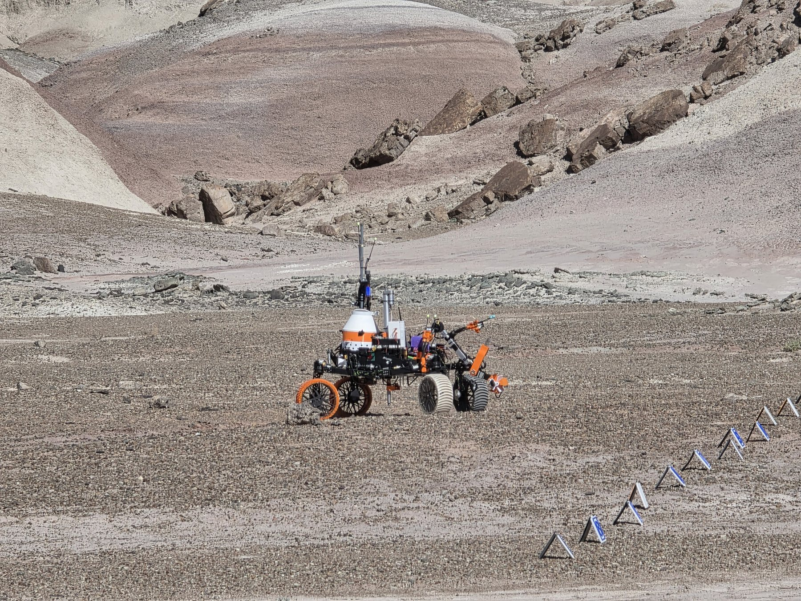
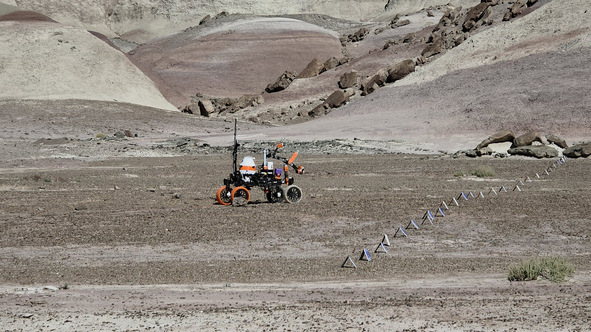
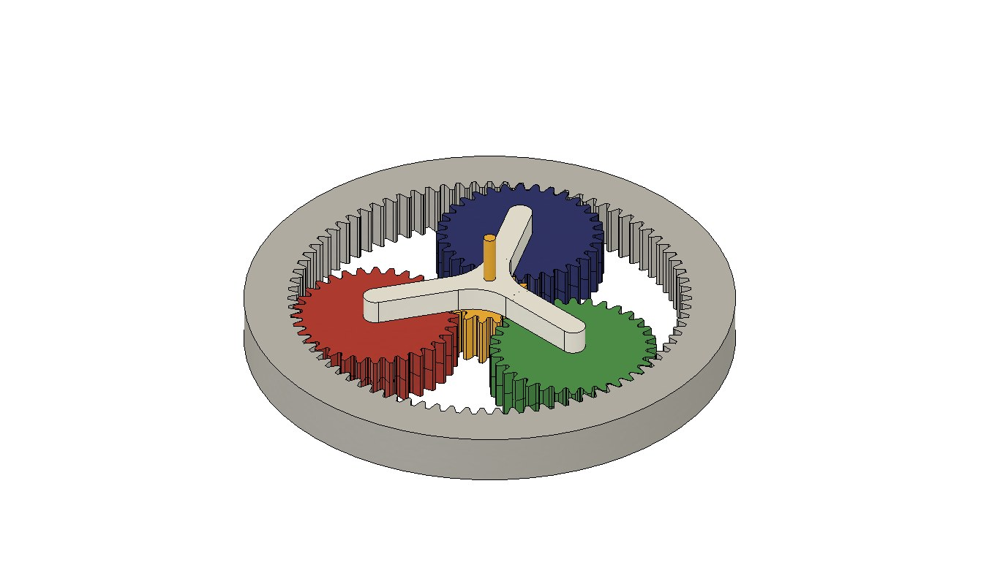
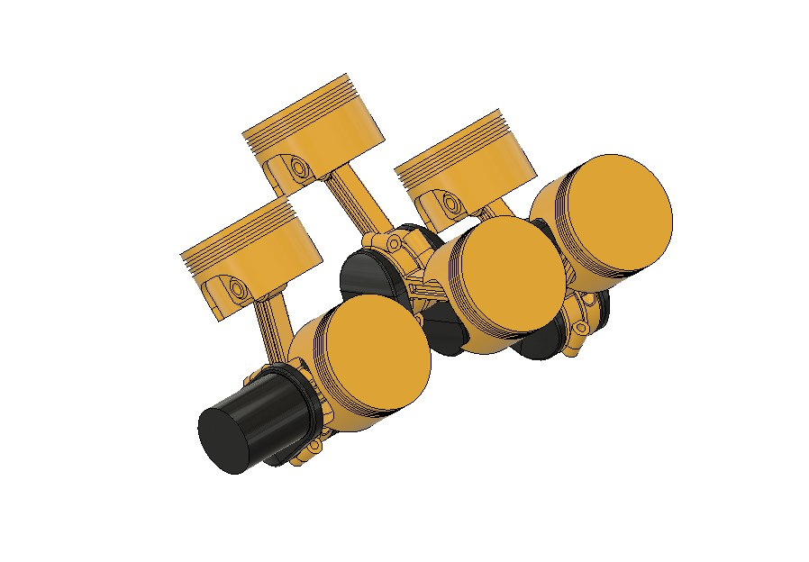
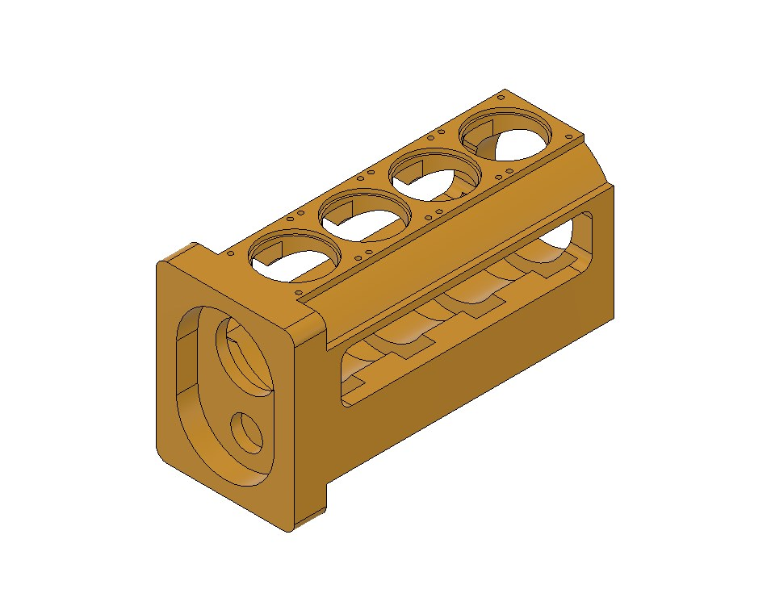

Mechanical Integration
Working with the rover as a complete physical system — assembly, interfaces, component placement and field readiness.
Engineering Work & Projects
This page focuses on the work I have physically contributed to and the technical areas I am developing through hands-on experience.

Primary Engineering Experience
Rover development has been the most important practical part of my engineering journey. My contribution has included mechanical design, prototyping, fabrication, 3D printing, assembly and integration, with increasing responsibility from Intern to Team Lead.
Detailed rover CAD, drawings, dimensions and internal design information are intentionally not published here in accordance with team and university confidentiality requirements.
Original Design · Physical Build
Designed by me from scratch
I developed the complete mechanical layout and CAD model in Fusion 360 for an electronics-focused project, then carried the design into a physical build.
The platform was arranged to integrate the chassis and wheel system with a battery holder, motor driver, ESP board, air-sensing hardware, filtration unit, relay module and supporting electronics.
The air sensor monitors air data.
An abnormal condition can be signaled to the dashboard/control system.
The controller can start the filtration system through a relay module.


My Contribution
I designed the RC car platform itself and developed the mechanical arrangement needed to accommodate the major electronic and filtration components. This was not only a modelling exercise—the design was also built physically.
Mechanical & Field Work

Working with the rover as a complete physical system — assembly, interfaces, component placement and field readiness.

Testing exposes issues that are difficult to predict during design. Field feedback guides mechanical improvements and future iterations.

Real terrain provides a practical check on mechanical reliability, integration choices and overall system readiness.
Embedded Hardware
My embedded systems experience is integration-oriented. I am developing practical understanding of how controllers and sensors fit into robotic systems and how mechanical and electronic subsystems interact.
CAD Studies & Mechanical Modelling
These are recreated study models for learning and practice. The RC car project above is my original design.

Practised gear relationships, component alignment and assembly structure in Fusion 360.

Used as a study in repeated geometry, component positioning and complex mechanical assemblies.

Recreated to strengthen solid modelling, geometric construction and precision modelling fundamentals.
Software & Technical Growth
I am continuing to learn software development because modern robotics and engineering increasingly depend on software, automation and connected systems. My goal is to combine stronger software knowledge with my practical mechanical and hardware experience over time.
A Git learning and collaboration platform project through which I am developing familiarity with Git workflows, web development, Docker, backend concepts and structured software teamwork.
A lightweight HTML, CSS and JavaScript project used to document my engineering experience while strengthening my frontend fundamentals.
Future Additions